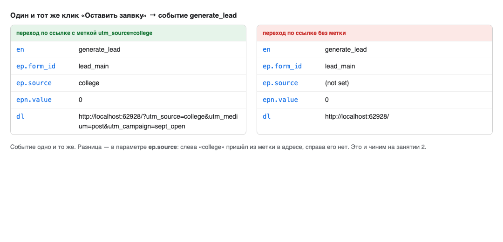
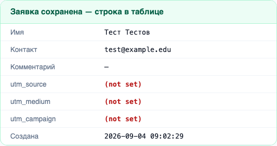
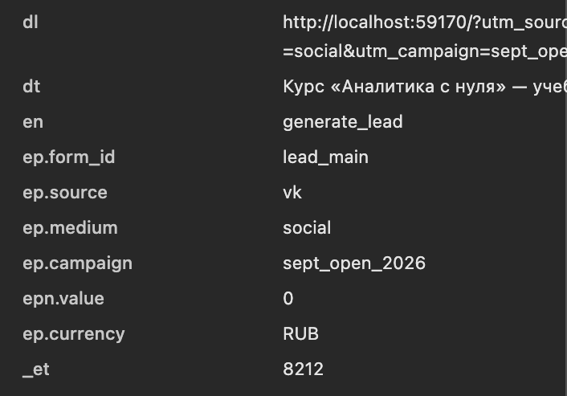
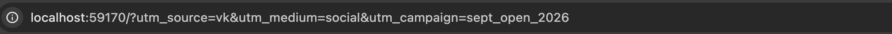
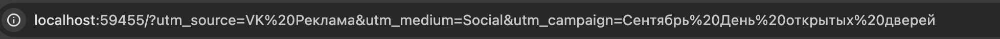
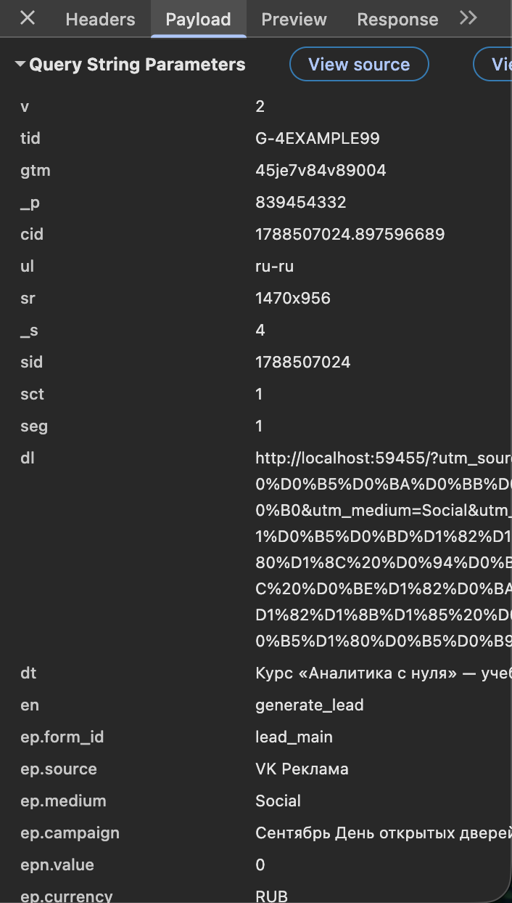
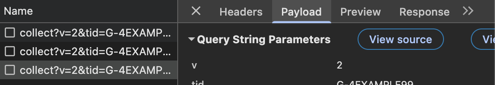
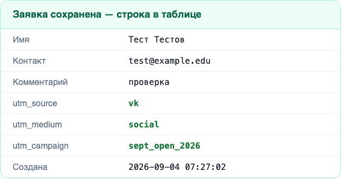
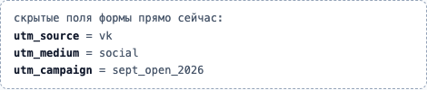
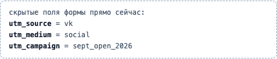

ОП.03 · занятие 2 · 2 академических часа
UTM-
метки
С чего начинаем · долг с занятия 1
В прошлый раз мы поймали это поле и обещали его починить
На занятии 1 мы вскрыли учебный стенд в панели сетевых запросов и нашли событие generate_lead. Все его поля были на месте, кроме одного: ep.source приходил то со значением, то со строкой (not set). Разница была не в событии, а в ссылке, по которой человек пришёл на страницу.


Сегодня разбираем, как устроена размеченная ссылка, и доводим источник от неё до строки в таблице заявок.
Вопрос 1
Почему браузер вообще
не знает, откуда пришёл человек?
Казалось бы, эти данные должны быть у него
Ответ
Потому что источник перехода — не свойство браузера, а надпись, которую делает человек
Браузер сообщает о себе многое сам: язык, разрешение экрана, версию. Эти данные у него есть, потому что они описывают его самого. А «человек пришёл из рассылки приёмной комиссии» — не свойство браузера, а факт о рекламной работе, который браузеру взять неоткуда.
Есть одна подсказка — заголовок Referer: адрес страницы, с которой перешли. Но он рассказывает мало и часто пропадает совсем. Переход из мобильного приложения, из мессенджера, из письма в почтовом клиенте или из документа не оставляет его вовсе — с точки зрения аналитики такой переход выглядит прямым заходом. Отсюда и раздутый канал direct, о котором шла речь в конце занятия 1.
Поэтому источник не вычисляют, а записывают заранее: тот, кто публикует ссылку, дописывает в неё пометку о том, где эта ссылка стоит. Пометка едет вместе с адресом и доезжает до отчёта.
Вопрос 2
Из чего вообще
состоит ссылка?
Разберём адрес по частям, прежде чем что-то в него дописывать
Ответ · часть 1 · то, без чего ссылки не бывает
Три обязательные части: схема, узел, путь
Схема — по каким правилам общаться с сервером. Узел — имя машины, к которой обращаемся. Путь — что именно на этой машине запрашиваем. Этих трёх частей достаточно, чтобы страница открылась: адрес https://kolledzh.ru/kursy — законченный и рабочий.
Строение адреса описано не соглашением между сайтами, а стандартом — RFC 3986. Поэтому любой браузер, любой сервер и любая система аналитики разбирают адрес на одни и те же части одинаково.
Ответ · часть 2 · то, что дописывают
После вопросительного знака начинается строка запроса
Строка запроса — это довесок к адресу: набор пар «имя=значение». Знак ? отмечает её начало и ставится один раз. Пары отделяются друг от друга знаком &. Внутри пары имя и значение разделяет =.
Страница откроется и без этого довеска. Строка запроса нужна, чтобы передать странице дополнительные сведения: какую показать страницу списка, в каком порядке, по какому запросу искать. Метка источника — такой же довесок, только читает её не сама страница, а код счётчика.
Ответ · часть 3 · четыре правила синтаксиса
Что считается правильно составленной строкой запроса
? знаком-разделителем уже не считается: он становится обычным символом внутри значения.?a=1&b=2 — две пары. ?a=1?b=2 — одна пара, у которой значение равно 1?b=2. Ошибка не видна глазом и не мешает странице открыться.%20. Тем же способом кодируются кириллица и знаки препинания.VK и vk — разные строки. Для системы аналитики это два разных источника, а не один, записанный по-разному.Три из этих четырёх правил станут причинами конкретных ошибок в отчёте — разберём каждую отдельно.
Вопрос 3
А можно дописать в адрес
что угодно?
Сайт же не знает про наши пары
Ответ
Можно: незнакомые пары сервер просто не читает
Сервер разбирает строку запроса и берёт из неё только те имена, которые ему нужны. Пара с незнакомым именем не вызывает ошибки — её никто не запрашивает, и она остаётся лежать в адресе. Проверить это можно прямо сейчас: допишите к адресу любой открытой страницы ?proverka=1 и перезагрузите — страница откроется как обычно.
Именно на этом свойстве и держатся метки источника. Их не читает сервер сайта — их читает код счётчика, который работает в браузере и разбирает адрес самостоятельно.
Отсюда следствие для практики: разметить можно ссылку на любой сайт, даже если у вас нет к нему доступа, и ссылка останется рабочей. А вот попадёт ли метка в отчёт — зависит от того, установлен ли на сайте счётчик, который её прочитает.
Вопрос 4
Так что такое
UTM-метка?
Теперь у нас есть, из чего собрать определение
Ответ · определение
UTM-метка — это пара «имя=значение» в строке запроса, описывающая источник перехода
Что это. Обычная пара в строке запроса, у которой имя начинается с utm_, а значение задаёт человек, публикующий ссылку. Никакого особого статуса у неё в адресе нет: для браузера это такой же довесок, как page=2.
Как работает. Человек переходит по размеченной ссылке. Адрес вместе с меткой попадает в адресную строку, оттуда — в поле dl запроса события. Код счётчика читает адрес, вырезает значения меток и кладёт их в отдельные поля события. Дальше система аналитики собирает из этих полей строки отчёта по источникам.
Зачем нужна. Чтобы у каждой заявки был известен источник и каналы можно было сравнивать между собой: где переходов много, а заявок мало; какая рассылка сработала, а какая нет. Без метки такие переходы сливаются в direct и (not set), и сравнивать становится нечего.
Ответ · продолжение · откуда взялось название
Три буквы достались от системы, которой больше нет
UTM расшифровывается как Urchin Tracking Module — «модуль отслеживания Urchin». Urchin — название системы веб-аналитики компании Urchin Software Corporation, появившейся в 1996 году. Формат меток придумали там, задолго до Google.
В апреле 2005 года Google купил Urchin, а в ноябре того же года запустил на его основе Google Analytics. Метки перешли в новую систему как есть — вместе с приставкой utm_ в именах. Размеченных ссылок к тому моменту было уже слишком много, чтобы менять формат: переименование сломало бы разметку на всех сайтах разом.
Сама система Urchin закрыта в 2012 году, а её приставка осталась в адресах и работает до сих пор. Метки читает не только Google Analytics: utm_* понимают Яндекс.Метрика, почтовые рассылки, рекламные кабинеты и системы управления заявками. Формат стал общим не по стандарту, а потому что его поддержали все.
Практический вывод: имена меток менять нельзя. utm_source — это имя, на которое настроены чужие системы, а не слово, которое можно сократить по своему вкусу.
Ответ · продолжение · сколько их всего
Меток пять: три обязательные и две для рекламы
utm_source→Откуда. Площадка, на которой стоит ссылка: сообщество, рассылка, партнёрский сайт, афиша с QR-кодомutm_medium→Каким способом. Тип канала: пост в соцсети, письмо, платное объявление, переход с чужого сайтаutm_campaign→В рамках чего. Конкретное мероприятие или набор: день открытых дверей сентября 2026 годаutm_term→Поисковый запрос, по которому показали платное объявление. В обычной работе не нуженutm_content→Что именно нажали, когда в одном письме или объявлении две разные ссылкиОбязательная только одна — utm_source: без неё разметка не имеет смысла, потому что неизвестна площадка. На практике всегда ставят три первые: по одному utm_source нельзя отличить пост от письма, а сентябрьскую кампанию — от мартовской.
Мы работаем с тремя. Две последние разберём позже, когда дойдём до платных объявлений.
Вопрос 5
Что писать
в utm_source?
Разбираем по одной метке за раз
Ответ · метка 1 из 3
utm_source — название площадки, на которой стоит ссылка
Отвечает на вопрос «где человек увидел ссылку». Не «как» и не «зачем» — именно место. Значение придумывает тот, кто размечает; закрытого списка здесь нет, и в этом главная опасность: два человека назовут одну площадку по-разному, и в отчёте появятся две строки.
vk.com, не VK, не вконтакте — одно написание на всю группуdirectpartner_lyceum, partner_cdoВопрос 6
А utm_medium —
разве не то же самое?
Эти две метки путают чаще всего
Ответ · метка 2 из 3
utm_medium — не место, а способ доставки ссылки
Разница видна, когда одна и та же площадка работает двумя способами. Сообщество во «ВКонтакте» может дать переход из обычного поста и из платного объявления. Площадка одна, utm_source=vk в обоих случаях — а вести себя эти переходы будут по-разному, и считать их вместе нельзя: за одни заплатили, за другие нет.
| Что произошло | utm_source | utm_medium |
|---|---|---|
| Обычный пост в сообществе колледжа | vk | social |
| Платное объявление в том же сообществе | vk | cpc |
| Письмо приёмной комиссии | priem_email | |
| Ссылка со страницы партнёра | partner_site | referral |
Проверка себя: utm_source отвечает «где увидели», utm_medium — «каким способом ссылка туда попала».
Ответ · продолжение · почему здесь нельзя выдумывать значения
Шесть значений utm_medium, которые аналитика узнаёт сама
В отличие от utm_source, у utm_medium есть фактически сложившийся список. Google Analytics разбирает заявки по каналам по значению именно этой метки, и узнаёт он ограниченный набор строк:
Написали rassylka вместо email — переходы попадут в строку Unassigned: канал не определён. Данные не потеряются, но готовый отчёт по каналам будет бесполезен, пока значение не исправят на следующей кампании. Задним числом уже отправленные события не меняются — на занятии 1 мы это разбирали.
Для офлайновых источников подходящего значения в списке нет. Мы будем писать qr для афиш — с пониманием, что такие переходы окажутся в Unassigned. Это осознанное решение справочника, а не ошибка: важнее отличать афишу от рассылки, чем попасть в готовую категорию.
Вопрос 7
Зачем нужна
третья метка?
Площадка известна, способ известен — что ещё
Ответ · метка 3 из 3
utm_campaign — повод, по которому ссылку опубликовали
Первые две метки описывают дорогу, третья — задачу. Колледж каждый год зовёт на день открытых дверей и каждый год пишет об этом во «ВКонтакте». Без третьей метки переходы сентября 2026 года и марта 2026 года окажутся в одной строке отчёта, и сравнить два набора будет нечем.
%D0%A1%D0%B5...%202026 — разберём это подробно через несколько экрановРабочее правило: в названии кампании должны быть повод и период. Тогда отчёт читается без пояснений.
Ответ · продолжение · линейка целиком
Собираем ссылку из частей, которые уже разобрали
Первая часть — адрес той страницы, куда человек должен попасть; она не меняется от канала к каналу. Меняется только довесок: для рассылки в тех же трёх парах будут другие значения, а страница останется той же.
Такую ссылку и публикуют. Человек, который по ней перейдёт, увидит обычную страницу курсов — довесок на её содержимое не влияет. Зато в адресной строке останется запись о том, откуда он пришёл, и её прочитает счётчик.
Вопрос 8
Как метка из адреса
попадает в отчёт?
Проследим весь путь, как на занятии 1 прослеживали событие
Ответ · пять шагов, ни одного лишнего
Маршрут одного значения: от ссылки до строки отчёта
?utm_source=vk→Шаг 1. Человек нажал размеченную ссылку. Адрес с довеском оказался в адресной строке браузераdl=…?utm_source=vk&…→Шаг 2. Счётчик отправил событие. В поле dl он положил адрес страницы целиком, вместе с довескомep.source=vk→Шаг 3. Код страницы вырезал значение метки из адреса и положил его отдельным полем событияutm_source=vk→Шаг 4. Тот же код записал значение в скрытое поле формы — и оно уехало вместе с заявкой в таблицустрока «vk» · 12→Шаг 5. Аналитика сложила события с одинаковым значением и показала их одной строкой отчётаШаги 3 и 4 — разные и независимые. Первый ведёт значение в аналитику, второй — в таблицу заявок. Настроить можно один и забыть про другой: тогда в аналитике источник будет, а в заявке останется (not set). Это ровно та точка разрыва «форма → таблица», которую мы отмечали на занятии 1.
Ответ · шаг 3 крупным планом · код учебного стенда
Слева — код, который вырезает метки, справа — что улетело
// читаем метки из адресной строки
const q = new URLSearchParams(location.search);
const c = {
source: q.get('utm_source') || '(not set)',
medium: q.get('utm_medium') || '(not set)',
campaign: q.get('utm_campaign') || '(not set)'
};
gtag('event', 'generate_lead', {
form_id: 'lead_main',
source: c.source,
medium: c.medium,
campaign: c.campaign
});
stend/analytics.js + stend/form.js
en=generate_lead ep.form_id=lead_main ep.source=vk ep.medium=social ep.campaign=sept_open_2026
вкладка Payload
Вся «магия разметки» — это URLSearchParams и три вызова get. Метода get возвращает значение по имени или null, если такой пары в адресе нет; тогда срабатывает || и подставляется строка (not set). Именно она и приходила в отчёт на прошлом занятии.
Ответ · тот же переход, снятый на стенде
Адресная строка и вкладка Payload одного и того же перехода

localhost/?utm_source=vk&utm_medium=social&utm_campaign=sept_open_2026utm_source. На прошлом занятии здесь было (not set)utm_medium. Новое поле: на занятии 1 стенд эту метку не читалutm_campaign. По нему в отчёте можно отделить сентябрьскую кампанию от мартовскойВопрос 9
Почему метки надо писать
по одному правилу?
Разберём на числах, что бывает, когда правила нет
Ответ · свод разметки · одна кампания, четыре человека
Четверо разметили один день открытых дверей — каждый по-своему
что написали в ссылках
utm_medium=social
utm_campaign=sept_open_2026
utm_medium=Social
utm_campaign=sept_open_2026
utm_medium=post
utm_campaign=sept-open-2026
utm_medium=social
utm_campaign=Сентябрь ДОД
что получилось в отчёте по источникам
| vk / social / sept_open_2026 | 12 |
| VK / Social / sept_open_2026 | 9 |
| vk.com / post / sept-open-2026 | 11 |
| vk / social / %D0%A1%D0%B5%D0%BD… | 8 |
Переходов было 40, площадка одна, повод один. В отчёте — четыре строки, и самая большая из них — 12. Руководитель, который посмотрит на такой отчёт, увидит четыре слабых источника вместо одного сильного.
Ответ · тот же свод после единого справочника
Те же сорок переходов, записанные одинаково
что написали в ссылках
utm_medium=social
utm_campaign=sept_open_2026
utm_medium=social
utm_campaign=sept_open_2026
utm_medium=social
utm_campaign=sept_open_2026
utm_medium=social
utm_campaign=sept_open_2026
что получилось в отчёте по источникам
| vk / social / sept_open_2026 | 40 |
Данные те же самые: ни одного лишнего перехода не появилось и ни один не потерялся. Изменилось только написание — и вместо четырёх строк по 8–12 получилась одна на 40. Справочник меток не улучшает результат кампании, он делает результат видимым.
Отсюда и требование методички: договориться о написании нужно до публикации ссылок. Задним числом уже отправленные события не переписываются.
Вопрос 10
Почему «VK» и «vk» —
это два источника?
Человек-то видит одно и то же слово
Ответ · ошибка 1 · регистр
Потому что значения не сравниваются по смыслу — они сравниваются посимвольно
Собирая отчёт, система группирует события по значению поля. Группировка — это сравнение строк: код проверяет, совпадает ли первый символ с первым, второй со вторым. Строки VK и vk различаются в обоих символах, поэтому попадают в разные группы. Никакого «понимания», что это одна и та же социальная сеть, здесь нет и не предполагается.
Одно сообщество, один повод, три строки. Заметить это в отчёте трудно: строки стоят не рядом, а в разных местах списка, отсортированного по числу переходов.
Лечится это не проверкой отчёта, а правилом на входе: значения меток пишем только строчными латинскими буквами. Регистр — единственная из ошибок разметки, которую можно исключить полностью одним соглашением.
Ответ · ошибка 2 · пробел
Пробела в адресе не существует — он превращается в код
По стандарту RFC 3986 в адресе допустим ограниченный набор символов, и пробела среди них нет. Когда пробел всё-таки попадает в значение, браузер заменяет его на процентный код — знак процента и шестнадцатеричный номер символа. Пробел получает номер 20, отсюда %20.
Встречается и второй вариант записи — sept+open: знак «плюс» вместо пробела достался от формата, которым браузер отправляет данные форм. Обе записи попадаются в жизни, и это две разные строки: значения sept%20open и sept+open дадут в отчёте две группы.
Поэтому пробел в значениях не ставят вовсе. Слова разделяют символом подчёркивания: sept_open_2026. Подчёркивание допустимо в адресе как есть, ни во что не превращается и читается человеком без усилий.
Ответ · ошибка 3 · кириллица · настоящий кадр со стенда
Что делается со ссылкой, размеченной по-русски


%20. Кириллицу браузер показывает по-русски, но в запрос она уйдёт кодами — по три символа %D0%… на каждую букву.Оба адреса рабочие: обе страницы откроются. Разница проявится в отчёте — посмотрим, чем именно это оборачивается.
Ответ · та же испорченная ссылка · вкладка Payload
Кириллица в поле dl занимает восемь строк вместо одной

%D0%B5, %D0%BA и так далее. Прочитать значение метки в этом виде нельзяsocial. В отчёте по каналам это значение не совпадёт с ожидаемым и уйдёт в UnassignedСобытие ушло, данные не потерялись — и в этом ловушка. Ошибка разметки ничего не ломает заметным образом: она проявится через месяц, когда отчёт по каналам придётся объяснять.
Вопрос 11
Какие ещё бывают
ошибки разметки?
Соберём их в один список — по симптому в отчёте
Ответ · шесть ошибок · слева симптом, справа причина в ссылке
Что видно в отчёте и что искать в ссылке
utm_source в опубликованных ссылках_sept_open_2026utm_sourse, utm_soure, utm_Source. Счётчик ищет точное имя и не находит его& написан второй ?: …utm_medium=social?utm_campaign=sept. Всё после второго ? стало частью значения utm_mediumПервые три — ошибки написания значения, вторые три — ошибки сборки самой ссылки. Первые видно в отчёте, вторые — только в ссылке.
Ответ · продолжение · седьмая ошибка, которую не видно нигде
Метка после решётки не читается вообще
У адреса есть ещё одна часть, о которой мы не говорили, — фрагмент: всё, что стоит после знака #. Он придуман для перехода к разделу внутри страницы и, в отличие от строки запроса, не отправляется на сервер вовсе: браузер обрабатывает его сам.
Код счётчика читает метки из строки запроса — это свойство location.search, то есть часть адреса от ? до #. Всё, что после решётки, лежит в другом свойстве и в разбор не попадает.
Ошибка редкая, но неприятная: ссылка выглядит размеченной, открывается нормально, а источник у всех переходов остаётся (not set). Появляется она обычно при копировании ссылки из адресной строки страницы, у которой уже был якорь: метку дописывают в конец, за решётку, не заметив её.
Правило простое: метки всегда идут после ? и до #. Если в адресе есть якорь, довесок вставляют перед ним.
Вопрос 12
Как договориться,
чтобы все писали одинаково?
Памяти на это не хватает — нужен документ
Ответ · справочник меток · часть 1 · правила написания
Шесть правил, которые закрывают шесть ошибок
vk / VK / Vk на три строкиsept. Закрывает превращение значения в %D0%…organic · cpc · email · social · referral · affiliate, плюс согласованный qr. Своих значений не выдумываемsept_open_2026, а не dod и не test. Через год название должно читаться так жеПравила 1–3 относятся к тому, как записаны символы, правила 4–5 — к тому, какие слова выбраны, правило 6 — к порядку работы. Ни одно из них не следует из технического ограничения: адрес с прописной буквой и кириллицей вполне рабочий. Это соглашение, и держится оно только на том, что его соблюдают все.
Ответ · справочник меток · часть 2 · таблица каналов
Справочник группы: четыре канала одной кампании
| Канал | utm_source | utm_medium | utm_campaign |
|---|---|---|---|
| Пост в сообществе колледжа | vk | social | sept_open_2026 |
| Рассылка приёмной комиссии | priem_email | sept_open_2026 | |
| QR-код на печатной афише в холле | afisha_qr | qr | sept_open_2026 |
| Ссылка со страницы партнёра | partner_site | referral | sept_open_2026 |
Столбец utm_campaign одинаков у всех четырёх строк — это одна кампания, доставленная четырьмя способами. Различают каналы первые два столбца. | |||
Такую таблицу заводят один раз и дополняют по мере появления каналов. Она же служит списком, по которому потом проверяют отчёт: если в отчёте появилось значение, которого нет в таблице, — значит, кто-то разметил ссылку мимо справочника.
Эту таблицу вы заполните на практике под свои каналы и сдадите как результат занятия.
Вопрос 13
Как проверить ссылку
до того, как её опубликовали?
После публикации исправлять поздно
Ответ · проверка 1 из 2 · адресная строка · 15 секунд
Открыть ссылку и прочитать адрес глазами
? в начале довеска, дальше только &. Второй ? — уже ошибка%20 и последовательностей %D0%…. Если они есть — в значении остались пробел или кириллицаОтвет · проверка 2 из 2 · панель Network · как на занятии 1
Убедиться, что счётчик метку прочитал
Адресная строка показывает только то, что метка доехала до браузера. Прочитал ли её код счётчика и уехала ли она в событие — видно лишь в запросе. Порядок тот же, что на прошлом занятии: F12 → вкладка Network → фильтр collect → отправить форму → выбрать строку en=generate_lead → вкладка Payload.

collect · статус 204 · тип pingПроверять нужно оба места. Метка в адресе есть, а ep.source пуст — значит, счётчик её не читает: либо опечатка в имени, либо метка стоит после решётки.
Ответ · продолжение · границы этой проверки
Три случая, которые проверка на своём компьютере не поймает
Первые два случая — про площадку, третий — про сам сайт, и он самый частый. Разберём его отдельно: это последний участок маршрута, где источник ещё можно потерять.
Вопрос 14
Метка есть в адресе —
значит, она будет и в заявке?
Возвращаемся к точке разрыва с занятия 1
Ответ
Нет. Форма отправляет только то, что в ней есть
Метка живёт в адресе страницы. Форма отправляет содержимое своих полей: имя, контакт, комментарий. Адрес страницы в форму не входит — это два разных набора данных, и сами по себе они не соединяются. Поэтому заявка уезжает в таблицу без источника, даже когда в аналитике он определён правильно.
Соединяют их скрытыми полями. Скрытое поле — это поле формы, которое не показывается посетителю и не заполняется им: значение туда кладёт код страницы. Для человека формы три поля, для сервера — шесть.
<!-- в вёрстке формы --> <input type="hidden" name="utm_source"> <input type="hidden" name="utm_medium"> <input type="hidden" name="utm_campaign">
stend/index.html
// при загрузке страницы
document.getElementById('utm_source')
.value = c.source;
document.getElementById('utm_medium')
.value = c.medium;
document.getElementById('utm_campaign')
.value = c.campaign;
stend/form.js
Ответ · продолжение · две заявки со стенда
Одна и та же форма, отправленная с меткой и без неё

Обратите внимание: вторая заявка не бракованная. Менеджер отработает её точно так же. Потеряна не заявка, а возможность оценить канал: через месяц по такой таблице нельзя будет сказать, что дало результат, а что нет.
Ответ · продолжение · последний участок, где источник теряется
Человек пришёл на главную, а форму заполнил на третьей странице
Переход внутри сайта делается по обычной ссылке из меню — без довеска. На второй странице location.search уже пуст, и код, читающий метки оттуда, вернёт (not set). Заявка с внутренней страницы потеряет источник, хотя человек пришёл по размеченной ссылке.
Решение — запомнить значение при первом заходе. На стенде это одна строка: метки складываются в sessionStorage — хранилище браузера, которое живёт до закрытия вкладки. Если в адресе меток нет, значения берутся оттуда. Такой способ называют первым касанием: за источник заявки считается та ссылка, по которой человек попал на сайт.


Демонстрация · преподаватель · 10 минут
Проводим одно значение от ссылки до строки заявки
- Открыть стенд без метки →
F12→ Network, фильтрcollect. Отправить форму → в заявке три(not set). - Открыть стенд по ссылке
?utm_source=vk&utm_medium=social&utm_campaign=sept_open_2026→ показать адресную строку. - Показать блок скрытых полей под формой: значения уже подставлены, до отправки.
- Отправить форму → выбрать
en=generate_lead→ Payload →ep.source,ep.medium,ep.campaign. - Показать сохранённую заявку: те же три значения дошли до строки таблицы.
- Открыть ссылку с меткой
?utm_source=VK Реклама→ сравнитьdlиep.sourceс прошлым запросом. - Перейти по меню на «Программу курса» → меток в адресе нет, значения в скрытых полях прежние.
Практическая работа · 45 минут · индивидуально или в паре
Собрать четыре ссылки и довезти источник до заявки
- Заполнить справочник (10 мин). Четыре канала своей учебной кампании: для каждого —
utm_source,utm_medium,utm_campaign. Значения по шести правилам,utm_mediumиз списка. - Собрать ссылки (10 мин). Четыре адреса стенда с довесками из своей таблицы. Записать каждый в файл целиком, а не «как в третьей строке».
- Открыть и проверить (15 мин). По каждой ссылке: адресная строка → Payload → три поля
ep.*. Отправить форму → снять кадр сохранённой заявки. - Сломать намеренно (10 мин). Взять пятую ссылку и испортить одним способом из реестра. Открыть, зафиксировать, чем именно отличается результат, и как это выглядело бы в отчёте.
Тестовые данные в форме: условное имя, учебный адрес почты, пометка «проверка». Настоящие персональные данные не вводить.
Контроль · 5 минут
Две из шести ссылок
размечены неправильно
Найдите их и назовите, что именно сломано
Контроль · все шесть ведут на одну страницу и все шесть открываются
Одна кампания, шесть каналов
- https://kolledzh.ru/kursy?utm_source=vk&utm_medium=social&utm_campaign=sept_open_2026
- https://kolledzh.ru/kursy?utm_source=priem_email&utm_medium=email&utm_campaign=sept_open_2026
- https://kolledzh.ru/kursy?utm_source=VK&utm_medium=Social&utm_campaign=Сентябрь 2026
- https://kolledzh.ru/kursy?utm_source=afisha_qr&utm_medium=qr&utm_campaign=sept_open_2026
- https://kolledzh.ru/kursy?utm_source=tg&utm_medium=social?utm_campaign=sept_open_2026
- https://kolledzh.ru/kursy?utm_source=partner_site&utm_medium=referral&utm_campaign=sept_open_2026
Подсказка: одна ошибка — в написании значений, другая — в сборке самой ссылки. Вторую глазами заметить труднее.
Контроль · разбор
Ссылки 3 и 5
VK и Social — отдельные строки отчёта. Кириллица и пробел в Сентябрь 2026 — значение уедет как %D0%A1…%202026. Значение Social не совпадёт с social, и канал попадёт в Unassigned& перед utm_campaign стоит ?. Меток в такой ссылке не три, а две: utm_medium получает значение social?utm_campaign=sept_open_2026, а метки utm_campaign в адресе нет вовсеОстальные четыре собраны по справочнику. Строка 4 с utm_medium=qr — не ошибка: значение согласовано, и мы заранее знаем, что готовый отчёт по каналам отнесёт эти переходы в Unassigned.
Ошибка в ссылке № 5 не видна в отчёте никак: там просто не будет строки по кампании. Именно поэтому ссылку проверяют до публикации, а не отчёт после.
Приёмка · к концу пары
Что должно быть сделано
- Справочник меток — четыре канала, для каждого три значения. Все значения проходят по шести правилам.
- Таблица ссылок — четыре собранных адреса целиком, рядом с каждым название канала.
- Четыре тестовые заявки — по одной на канал. У каждой в кадре видны
utm_source,utm_medium,utm_campaign. - Один разбор поломки — что испортили в пятой ссылке, что изменилось в
ep.*и как это выглядело бы в отчёте. - Контрольный вопрос — показать в Payload собственное событие и назвать, из какой части адреса взялось значение
ep.source.
Домашнее задание · два, с разными сроками
Максим Николаевич не хочет задавать домашнее задание. Но очень хочет
- Расширить справочник до восьми каналов: добавить платное объявление, партнёрскую ссылку, подпись в письме и один канал на свой выбор.
- Собрать восемь ссылок и проверить каждую: адресная строка и три поля
ep.*в Payload. - Найти в интернете три реальные размеченные ссылки (рассылка, пост, объявление). Для каждой выписать значения меток и оценить по шести правилам: что сделано верно, что нарушено.
файл homework_02.md · ветка hw-03 · до занятия 3
- Метки
utm_*ставит владелец ссылки. Но в адресах попадаются и чужие пары:fbclid,gclid,yclid,_openstat. - Выбрать одну из них и разобрать: кто её дописывает, в какой момент, что она содержит и кому доступна.
- Свой замер: открыть пять ссылок из рассылок и соцсетей и выписать все пары, которые оказались в адресе помимо
utm_*. - Источники: не менее трёх, хотя бы один — документация системы или отчёт регулятора.
файл research_02.md · ветка hw-03-research
Порядок сдачи прежний: запрос на слияние в собственную ветку main, бланки — кнопка печати в PDF. Про ИИ: разметку, проверку в Payload и собственный замер делаете сами; модель допускается для формулировок и оформления. Я сам так делаю всегда, поэтому и вам запрещать не буду.
Итог занятия · и что дальше
Долг с занятия 1 закрыт: источник доезжает до заявки целым
Разметка — единственный участок маршрута, где данные создаёт человек, а не программа. Всё остальное на этом пути работает само: браузер отдаёт адрес, счётчик читает метку, форма кладёт значение в скрытое поле, аналитика группирует строки. Поэтому и ошибки здесь человеческие — прописная буква, пробел, лишний знак вопроса, — а последствия у них машинные: строка в отчёте разделится надвое, и никто об этом не сообщит.
На занятии 3 мы возьмём собранные вами заявки и займёмся тем, что происходит с ними дальше: как из потока заявок собирается отчёт, почему число в нём зависит от выбранного периода и что делать с теми переходами, у которых источник всё-таки остался неизвестным.